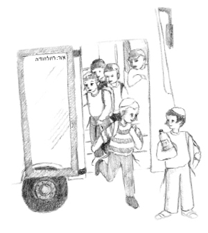

Mystery Destination
“I’m telling you, I saw it black on white!” It was Shmuli, my good friend, who said this and got me curious. “What did you see?” I asked him. “Next week, we’re going on a trip,” Shmuli informed me.

“Don’t ask,” said Shmuli. “I walked past the secretaries’ office and I glanced toward the copying machine. When I saw papers coming out of it, I peeked and saw that they were notices about a trip next week.”
“Great!” I rejoiced. “Where are we going?”
“Uh,” mumbled Shmuli. At this point, his enthusiasm lessened somewhat. “Just as I was about to read it, the secretary asked what I wanted and I had to go, so I wasn’t able to see where we are going.”
Shmuli and I are very curious kids. We always “have” to know all the details.
“We must find out where we are going before everyone knows …” we concluded, and went back to class before the teacher found out what our plans were.
In our class, we have a nice routine which you should adopt. Every day, we review a saying about Moshiach and Geula which helps us “live Geula.” This time the teacher brought an idea from a sicha on the pasuk, “dorach kochav m’Yaakov” (a star goes forth from Yaakov). I tried to listen but my head was filled with schemes how to discover the destination of our trip.
At the end of the lesson I realized I did not know that day’s Moshiach saying. And the rest of the lesson was mostly a blur. “A pity, if I won’t know the answer to the question about the saying, I won’t be entered into the weekly raffle,” I thought and immediately decided to listen more carefully the next day.
The days flew by quickly and it was already the end of the week. All our efforts to find out where we were going failed. Our teacher guarded the notes like diamonds and the careful search we did of the discarded papers from the copying machine did not help.
On Shabbos we met in shul and decided we “had” to make a daring move. We would go to the teacher himself and ask him! He would be surprised that we already knew about the trip but maybe, or so we hoped, the effect of the surprise would get him to tell us the destination before anyone else knew.
After the davening we began walking toward our teacher who was taking off his tallis. “Berel, you go over to him,” Shmuli urged me, while he stood behind me.
“Why me? You go first!” I retorted. Then we decided to be brave and we went over together. We saw our teacher get up and walk over to the table where the farbrengens are held.
I knew that this was our chance. If I did not go over to him now, we would not get an answer. I quickened my steps and stood in such a way that he would notice me. “Good Shabbos,” said the teacher.
“Uh,” I had a hard time getting started, once I too had said good Shabbos. “I, uh …” Suddenly, everything I wanted to say flew out of my head and instead of asking about the trip I said, “On Monday, I did not concentrate enough and I didn’t understand the daily saying. Can I make it up and enter the raffle next week?”
Shmuli was standing off to the side and I could see the frustrated look on his face. I could read his mind, “That’s it; we won’t know before everyone else.”
The teacher said, “Fine, you can make it up and I think you will do so at the museum …”
“What?!” I asked, wondering if I had heard correctly.
“Oh, nothing,” said the teacher, as though regretting he had said anything. “I meant to say you will have a chance to make up for it.”
The teacher sat down and I rushed over to Shmuli to celebrate the success of our mission. “At least we know before everybody else that we are going to a museum,” I said.
Shmuli added, “But we still don’t know which museum …”
“It’s okay,” I said as I winked at him, “to find out one detail along with our classmates.”
On Sunday, the students in our class got the note that said we were going to a museum the next day, to see the oldest puzzle in the world. The only ones who were not surprised were Shmuli and me, but our prior knowledge did not take away from our anticipation of the trip.
Time passed quickly and we were getting off the bus near the museum. We walked inside, following the guide who greeted us, and we saw the huge puzzle made up of pieces in various shapes that had been put together to form a beautiful scene.
“The story behind this puzzle is very interesting,” began the guide. “Somewhere in a distant valley is a pretty village whose residents lived in peace. Then one day, a quarrel began and the people were divided into a number of factions. Life in the village became miserable. Relatives and friends no longer talked to one another. The fighting and hurtful words grew worse from day to day.
The leader of the village, who wanted to restore peace, came up with an idea. He spoke to the village artist and asked him to draw a huge scenic picture. When the artist completed his work, the village leader tore the picture into many pieces.
“‘What are you doing?’ screamed the shocked artist. But the village leader reassured him that he knew what he was doing. The next day, every home in the village received a piece of the picture with an invitation to come on a certain day to the village center in order to try and put each piece in its proper place. The village leader thought that this symbolic act would restore peace and unity among the villagers.”
The guide paused and Moishy, who always paid attention to the small details, spoke up. “One minute, I see that a piece is missing in the center of the picture.”
“Yes, good observation,” said the guide. “Nearly all the villagers fit their piece of the picture into place, but one villager lost his piece. He searched but could not find it and the picture could not be completed.”
“Dear students,” said their teacher. “If you remember the Geula saying we learned recently, you certainly understand why we came here today.”
Now I understood what my teacher meant when he spoke to me in shul. The teacher winked at me and said, “On the pasuk, ‘dorach kochav m’Yaakov’ there are two explanations. According to one explanation, the pasuk is about Moshiach. According to the second explanation, the pasuk is about every Jew. The Rebbe explains that both explanations are correct because within every Jew there is a spark, a small part, of the neshama of Moshiach.
“So in order to bring Moshiach, every Jew must uncover the spark of Moshiach within himself, to think about what this means and what he has to do. In this way, all the sparks within all of us will unite and bring about the actual coming of the Rebbe, Melech HaMoshiach. To ensure that not even one piece will be missing, unlike this puzzle we see here, we will try to reveal the spark of Moshiach within us and live with Moshiach at every moment, so we will be ready to welcome Moshiach.”
Beis Moshiach (staff). "Mystery Destination." Beis Moshiach, no. 929 (June 10, 2014).